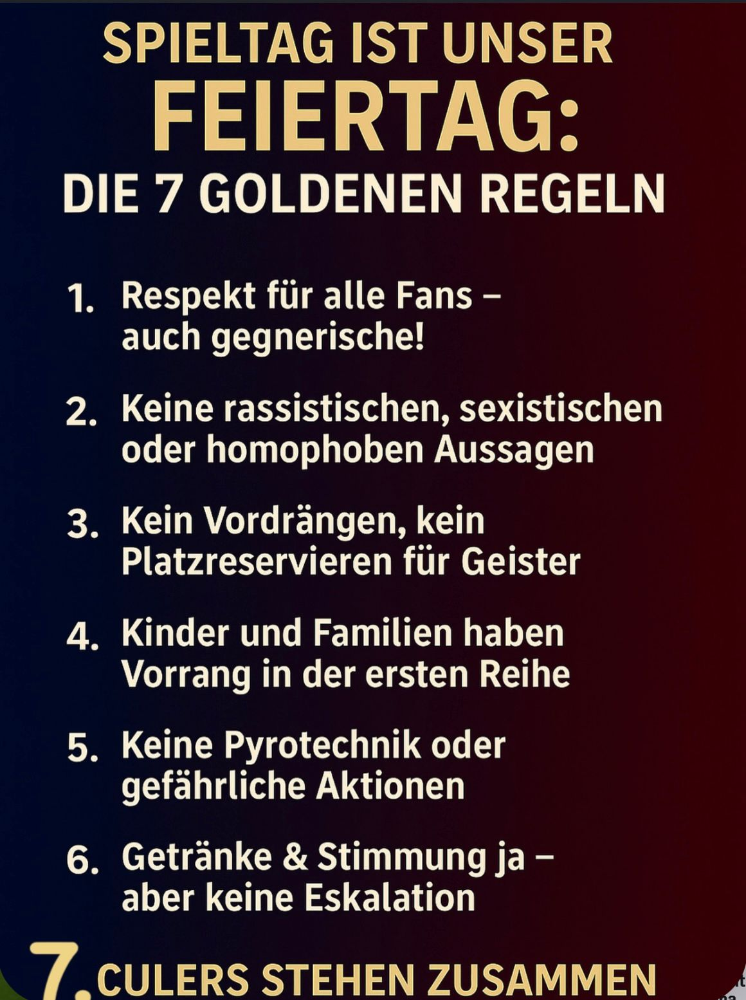

Més que ein Fanclub. Willkommen bei der Community des FC Barcelona in Wien.
Drei Gründer, eine Vision: Den FC Barcelona in die Herzen Wiens zu bringen. Seit Sommer 2025 haben wir aus einer Idee Realität gemacht.
Was als kleiner Kreis begann, ist heute ein anerkannter Treffpunkt für Culers aus der ganzen Welt. Wir stehen für Gemeinschaft, Leidenschaft und die Liebe zum Verein.
Unser Zuhause ist das Pointers Pub & Kitchen. Damit jeder Spieltag für alle ein Fest wird, gelten unsere Regeln:
